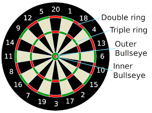
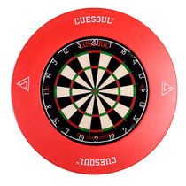

If you have purchased a brand new dartboard, you should find the following brackets and screws enclosed with the dartboard. Before you go to mount the dartboard, the following should be screwed into the back of it, which will help balance the board on the wall. Also be aware that there are several newer mounting brackets available to purchase seperatly
Once done you should then decide on a suitable wall and location where you wish to mount the dartboard. You should bare in mind that you need a minimum of 7.925 feet or 2.37 metres throwing distance away from the board. Try to avoid placing the board near stairs or doorways as bounceouts and ricochet's can occur. It is also very important that the screw is screwed into the wall at a height of 68 inches or 1.73 metres from the base of the floor. Always remember that the centre of the bullseye must be 1.73 metres above the base of the floor. This is the industry standard distances for throwing lines and board heights.
Its highly recommended that you purchase an outer protective ring for around the dartboard. These can vary in both size and price but is certainly a worthwhile purchase in order to protect the surrounding wall.
